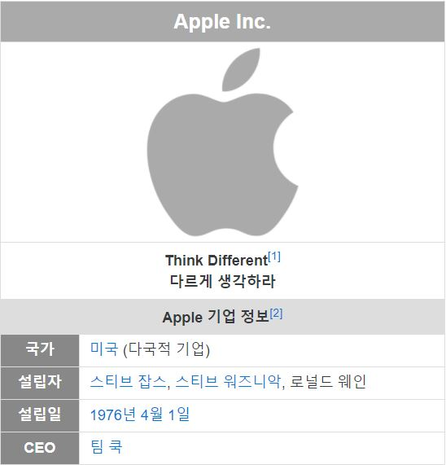

Simple Introduce
1976년 4월 1일에 설립한 미국의 하드웨어/IT/콘텐츠 기업.
애플의 대표상품은 아이폰이며, 코카콜라와 맥도날드 같은 미국자본주의를 상징하는 대표적인 제품이다.
본사는 실리콘밸리가 있는 미국 캘리포니아 주 쿠퍼티노에 있다.
'Apple Park' 로 명명된 신규 캠퍼스가 건축되었는데,
UFO를 닮은 외관으로 유명하다.
2014년경 음악 악세서리 및 스트리밍 회사인 Beats를 인수하면서 산하 브랜드로 두게 되었고,
2017년 12월경에는 모바일 음악 검색 서비스인 Shazam을 인수하게 되면서 산하 브랜드로 두게 되었다.
